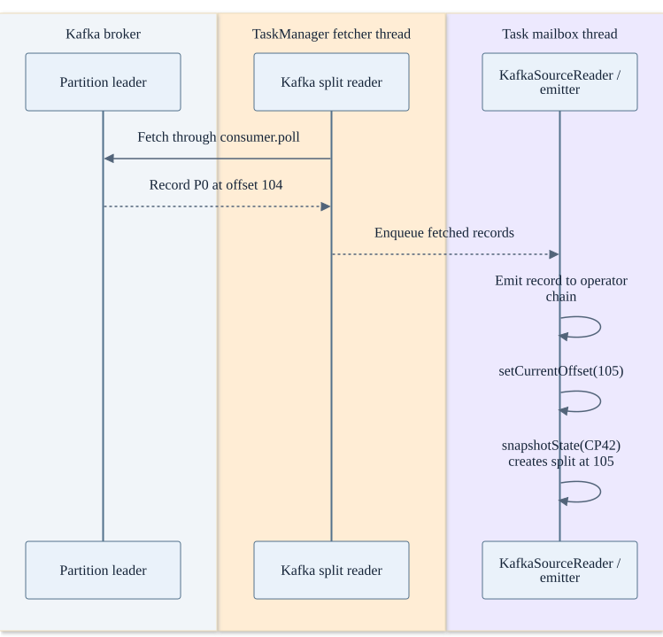
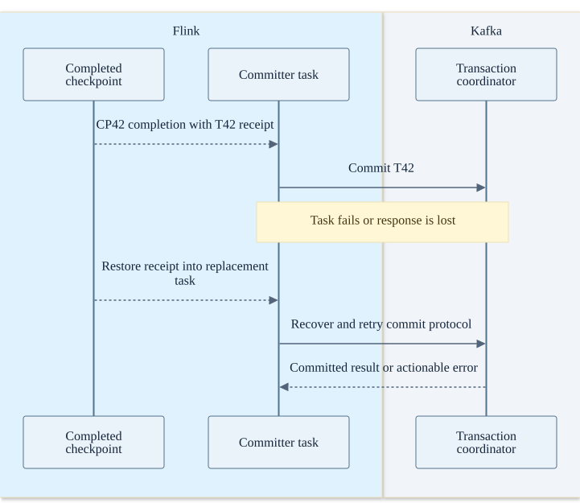

Chapter 09 · source-backed walkthrough
Flink Kafka connector: threads and EOS
The connector assigns Kafka partitions through the Flink source coordinator. Fetcher threads own KafkaConsumer I/O; task mailbox execution emits records and advances checkpointed split state. Kafka output transactions and optional Kafka group offset commits follow separate checkpoint-completion paths.
01
Partition discovery, assignment and reading
KafkaSourceEnumerator discovers subscribed partitions and initializes offsets through async coordinator work. Flink assigns splits to source readers. The split reader uses explicit KafkaConsumer assignment and seek behavior; the Kafka consumer group coordinator is not assigning these Flink source splits through an ordinary subscribe rebalance.
The fetcher I/O thread polls Kafka and hands records to a queue. SourceReaderBase.pollNext runs in the task execution path, invokes KafkaRecordEmitter and updates split state after emission. A record already prefetched from Kafka but not emitted is not counted as processed in the checkpointed next offset.
For our event at P0 offset 104, successful emission sets the mutable split offset to 105. snapshotState converts it into a KafkaPartitionSplit whose starting offset is 105. On restore the reader assigns and seeks using that stored split state. Initializer settings apply to newly initialized splits, not as a reason to discard restored progress.
Record 104 becomes checkpointed next offset 105
The queue is an in-process thread handoff. The Kafka fetch is network I/O; emission and split-state mutation are task-thread work.

02
A completed checkpoint fans out into two independent actions
With KafkaSink exactly-once, writer preparation yields transaction recovery information. ExactlyOnceKafkaWriter snapshots ongoing transactions and starts the next checkpoint transaction. KafkaCommitter commits the prepared output transaction after completion; its error handling distinguishes retriable errors and fatal fencing / state errors.
Separately, KafkaSourceReader can enqueue group-offset commits through its fetcher manager after completion. The KafkaConsumer owner thread executes commitAsync. The source code explicitly says failure of this offset commit does not break Flink correctness. Flink restores from checkpointed splits, not this monitoring position.
There is no sendOffsetsToTransaction coupling between the normal Flink KafkaSource group position and KafkaSink output. The durable Flink checkpoint coordinates source state and sink receipts. A read_committed downstream consumer waits for the output transaction markers / stable offsets, even after EndTxn has been acknowledged.
CP42 stores both source progress and output transaction recovery
The two post-checkpoint Kafka operations may finish in either order. No arrow implies atomicity between them.

Crash after checkpoint, before sink commit acknowledgement
A replacement committer resumes from the durable receipt. The exact connector transaction recovery code decides retry / fatal outcomes.

03
Failure and performance matrix
Partition count bounds useful source parallelism for a fixed set of partitions; additional source subtasks may be idle. Parallelism after a keyed exchange can be different. A skewed partition can bottleneck one reader even if other readers are idle.
Checkpoint interval affects sink visibility and replay distance. Producer batching controls transport efficiency inside a checkpoint. These are different buffers: a fast Kafka produce acknowledgement for an open transaction does not make its records visible to a read_committed consumer.
The source and sink connector checkouts are inspected separately from the Flink runtime checkout. Their revisions are recorded on the evidence page. The architecture trace is not a claim that these arbitrary HEAD builds were compiled and integration-tested together.
| Scenario | Handling | What to watch |
|---|---|---|
| Fetcher disconnect | Kafka client metadata refresh / retry, or task failure when errors escape | Source lag, retries, authentication / authorization errors. |
| Group offset commit fails after CP42 | Log / metric update; checkpointed split remains authoritative | External consumer lag can look stale even though Flink recovery is correct. |
| Old transactional producer fenced | Committer signals failure; ownership must be resolved | Transactional ID collision or obsolete task attempt; do not suppress it. |
| Kafka transaction expires during outage | Commit may fail despite a retained Flink receipt | Transaction timeout versus longest checkpoint + downtime + restart. |
| Source data retained for too little time | Restored offset may be out of range | Retention must cover processing lag and worst-case recovery. |
Inside the implementation
These excerpts come directly from the code paths used above. Expand a component to move from the system view into its implementation.
fk-enumerator KafkaSourceEnumerator.java:255
Partition discovery work is scheduled through coordinator async callbacks.
flink-connector-kafka/flink-connector-kafka/src/main/java/org/apache/flink/connector/kafka/source/enumerator/KafkaSourceEnumerator.java · ae656dd6fe23
254 @Override
255 public void start() {
256 adminClient = getKafkaAdminClient();
257
258 // Find splits where the start offset has been initialized but not yet assigned to readers.
259 // These splits must not be reinitialized to keep offsets consistent with first discovery.
260 final List<KafkaPartitionSplit> preinitializedSplits =
261 unassignedSplits.values().stream()
262 .filter(split -> !split.isMigrated())
263 .collect(Collectors.toList());
264 if (!preinitializedSplits.isEmpty()) {
265 addPartitionSplitChangeToPendingAssignments(preinitializedSplits);
266 }
267
268 if (topicIntegrityCheckEnabled && subscriber instanceof TopicMetadataSettable) {fk-fetch KafkaPartitionSplitReader.java:157
The fetcher I/O thread owns the KafkaConsumer.
flink-connector-kafka/flink-connector-kafka/src/main/java/org/apache/flink/connector/kafka/source/reader/KafkaPartitionSplitReader.java · ae656dd6fe23
156 try {
157 consumerRecords = consumer.poll(pollTimeout);
158 } catch (WakeupException | IllegalStateException e) {
159 // IllegalStateException will be thrown if the consumer is not assigned any partitions.
160 // This happens if all assigned partitions are invalid or empty (starting offset >=
161 // stopping offset). We just mark empty partitions as finished and return an empty
162 // record container, and this consumer will be closed by SplitFetcherManager.
163 KafkaPartitionSplitRecords recordsBySplits =
164 new KafkaPartitionSplitRecords(
165 ConsumerRecords.empty(), kafkaSourceReaderMetrics);
166 markEmptySplitsAsFinished(recordsBySplits);
167 return recordsBySplits;
168 }
169 KafkaPartitionSplitRecords recordsBySplits =
170 new KafkaPartitionSplitRecords(consumerRecords, kafkaSourceReaderMetrics);fk-emit KafkaRecordEmitter.java:45
The emitted record advances checkpointable split state to offset+1.
flink-connector-kafka/flink-connector-kafka/src/main/java/org/apache/flink/connector/kafka/source/reader/KafkaRecordEmitter.java · ae656dd6fe23
44 @Override
45 public void emitRecord(
46 ConsumerRecord<byte[], byte[]> consumerRecord,
47 SourceOutput<T> output,
48 KafkaPartitionSplitState splitState)
49 throws Exception {
50 try {
51 sourceOutputWrapper.setSourceOutput(output);
52 sourceOutputWrapper.setTimestamp(consumerRecord.timestamp());
53 deserializationSchema.deserialize(consumerRecord, sourceOutputWrapper);
54 splitState.setCurrentOffset(consumerRecord.offset() + 1);
55 } catch (Exception e) {
56 throw new IOException("Failed to deserialize consumer record due to", e);
57 }
58 }fk-state KafkaSourceReader.java:98
Checkpoint state is distinct from optional Kafka group offset commits.
flink-connector-kafka/flink-connector-kafka/src/main/java/org/apache/flink/connector/kafka/source/reader/KafkaSourceReader.java · ae656dd6fe23
97 @Override
98 public List<KafkaPartitionSplit> snapshotState(long checkpointId) {
99 List<KafkaPartitionSplit> splits = super.snapshotState(checkpointId);
100 if (!commitOffsetsOnCheckpoint) {
101 return splits;
102 }
103
104 if (splits.isEmpty() && offsetsOfFinishedSplits.isEmpty()) {
105 offsetsToCommit.put(checkpointId, Collections.emptyMap());
106 } else {
107 Map<TopicPartition, OffsetAndMetadata> offsetsMap =
108 offsetsToCommit.computeIfAbsent(checkpointId, id -> new HashMap<>());
109 // Put the offsets of the active splits.
110 for (KafkaPartitionSplit split : splits) {
111 // If the checkpoint is triggered before the partition starting offsetsTest source inspected or located, not executed: KafkaSourceReaderTest.java · testOffsetCommitOnCheckpointComplete
fk-offset KafkaSourceReader.java:126
Offset commit failure is logged; restored Flink split state remains the recovery authority.
flink-connector-kafka/flink-connector-kafka/src/main/java/org/apache/flink/connector/kafka/source/reader/KafkaSourceReader.java · ae656dd6fe23
125 @Override
126 public void notifyCheckpointComplete(long checkpointId) throws Exception {
127 LOG.debug("Committing offsets for checkpoint {}", checkpointId);
128 if (!commitOffsetsOnCheckpoint) {
129 return;
130 }
131
132 Map<TopicPartition, OffsetAndMetadata> committedPartitions =
133 offsetsToCommit.get(checkpointId);
134 if (committedPartitions == null) {
135 LOG.debug("Offsets for checkpoint {} have already been committed.", checkpointId);
136 return;
137 }
138
139 if (committedPartitions.isEmpty()) {fk-writer ExactlyOnceKafkaWriter.java:221
Prepare a transaction receipt; snapshot then starts the next transaction.
flink-connector-kafka/flink-connector-kafka/src/main/java/org/apache/flink/connector/kafka/sink/ExactlyOnceKafkaWriter.java · ae656dd6fe23
220 @Override
221 public Collection<KafkaCommittable> prepareCommit() {
222 // only return a KafkaCommittable if the current transaction has been written some data
223 if (currentProducer.hasRecordsInTransaction()) {
224 KafkaCommittable committable = KafkaCommittable.of(currentProducer);
225 LOG.debug("Prepare {}.", committable);
226 currentProducer.precommitTransaction();
227 return Collections.singletonList(committable);
228 }
229
230 // otherwise, we recycle the producer (the pool will reset the transaction state)
231 producerPool.recycle(currentProducer);
232 return Collections.emptyList();
233 }
234 Test source inspected or located, not executed: KafkaSinkITCase.java
fk-commit KafkaCommitter.java:103
Retryable and fenced transaction failures are distinguished.
flink-connector-kafka/flink-connector-kafka/src/main/java/org/apache/flink/connector/kafka/sink/internal/KafkaCommitter.java · ae656dd6fe23
102 producer = writerProducer.orElseGet(() -> getProducer(committable));
103 producer.commitTransaction();
104 backchannel.send(TransactionFinished.successful(committable.getTransactionalId()));
105 } catch (RetriableException e) {
106 LOG.warn(
107 "Encountered retriable exception while committing {}.", transactionalId, e);
108 request.retryLater();
109 } catch (ProducerFencedException e) {
110 logFencedRequest(request, e);
111 handleFailedTransaction(producer);
112 request.signalFailedWithKnownReason(e);
113 } catch (InvalidTxnStateException e) {
114 // This exception only occurs when aborting after a commit or vice versa.
115 // It does not appear on double commits or double aborts.
116 LOG.error(Test source inspected or located, not executed: KafkaCommitterTest.java